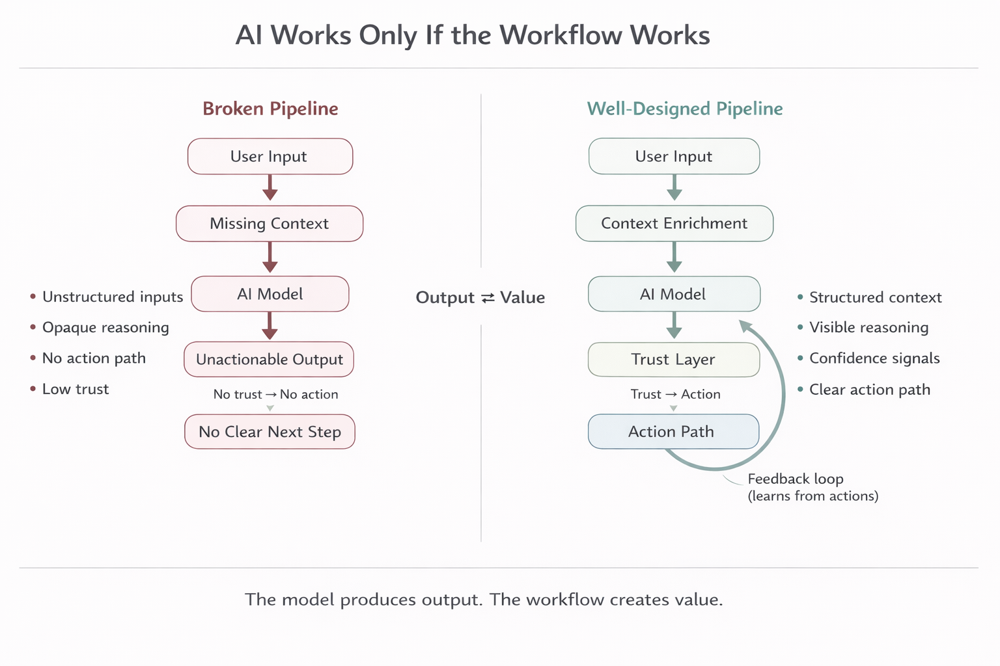

<!doctype html>
<html lang="en">
  <head>
    <meta charset="UTF-8" />
    <meta name="viewport" content="width=device-width, initial-scale=1" />
    <meta name="color-scheme" content="light" />
    <title>You Don’t Have an AI Problem. You Have a Workflow Problem. | Journal</title>
    <meta
      name="description"
      content="A short essay on why many underperforming AI features are workflow failures, not model failures."
    />

    <script>
      window.tailwind = window.tailwind || {};
      window.tailwind.config = {
        theme: {
          extend: {
            colors: {
              accent: "#BFD95A",
              accentMuted: "#7D9251",
            },
          },
        },
      };
    </script>
    <script src="https://cdn.tailwindcss.com"></script>

    <script src="https://unpkg.com/react@18/umd/react.production.min.js" crossorigin></script>
    <script src="https://unpkg.com/react-dom@18/umd/react-dom.production.min.js" crossorigin></script>
    <script src="https://unpkg.com/@babel/standalone/babel.min.js"></script>

    <style>
      body {
        font-family: ui-sans-serif, system-ui, -apple-system, Segoe UI, Roboto, Arial, sans-serif;
        background: #F4F4F1;
        color: #111111;
      }
    </style>
  </head>

  <body>
    <div id="root"></div>

    <script type="text/babel">
      const { createRoot } = ReactDOM;

      function PullQuote({ children }) {
        return (
          <blockquote className="my-12 border-l border-l-accentMuted/70 pl-4 pr-2 font-serif italic text-[1.18rem] leading-relaxed text-zinc-900">
            {children}
          </blockquote>
        );
      }

      function WorkflowCallout({ children }) {
        return (
          <div className="my-12">
            <div className="mb-3 text-[0.72rem] font-semibold uppercase tracking-[0.18em] text-zinc-500">
              Practical lens
            </div>
            <blockquote className="border-l border-l-accentMuted/70 pl-4 pr-2 font-serif italic text-[1.18rem] leading-relaxed text-zinc-900">
              {children}
            </blockquote>
          </div>
        );
      }

      function PlaceholderVisual() {
        return (
          <div className="my-12 overflow-hidden rounded-xl border border-zinc-200/80 bg-white/85">
            
          </div>
        );
      }

      function NewsletterArticle() {
        var _a = React.useState(0), progress = _a[0], setProgress = _a[1];

        React.useEffect(function () {
          function update() {
            var el = document.documentElement;
            var scrollTop = window.pageYOffset || el.scrollTop || 0;
            var scrollHeight = el.scrollHeight - el.clientHeight;
            var p = scrollHeight > 0 ? scrollTop / scrollHeight : 0;
            setProgress(Math.min(1, Math.max(0, p)));
          }
          update();
          window.addEventListener("scroll", update, { passive: true });
          return function () {
            window.removeEventListener("scroll", update);
          };
        }, []);

        return (
          <div className="min-h-screen">
            <div className="sticky top-0 z-30 h-[3px] w-full bg-transparent">
              <div
                className="h-full bg-accent/90"
                style={{ width: Math.max(progress * 100, 2) + "%" }}
              />
            </div>

            <div className="mx-auto max-w-2xl px-4 sm:px-6 lg:px-8 py-10">
              <div className="flex items-center justify-start">
                <a
                  href="writing.html"
                  className="text-sm text-zinc-600 hover:text-zinc-900 transition-colors"
                >
                  ← Back to Journal
                </a>
              </div>

              <h1 className="mt-6 font-serif text-4xl sm:text-5xl leading-tight tracking-tight text-zinc-900">
                You Don’t Have an AI Problem. You Have a Workflow Problem.
              </h1>

              <div className="mt-4 flex flex-wrap items-center gap-2 text-sm text-zinc-600">
                <span className="rounded-full border border-zinc-200 bg-white px-3 py-1">Workflow Design</span>
                <span aria-hidden="true" className="text-zinc-400">·</span>
                <span className="font-medium text-zinc-700">Mar 31, 2026</span>
                <span aria-hidden="true" className="text-zinc-400">·</span>
                <span className="font-medium text-zinc-700">3 min read</span>
              </div>

              <article className="mt-10">
                <p className="text-zinc-800 leading-relaxed">
                  While building HireFeed, I kept thinking the next lift would come from ranking quality.
                  The signals looked better, the extraction improved, and the output got cleaner.
                  Users still hesitated.
                </p>

                <p className="mt-6 text-zinc-800 leading-relaxed">
                  That was the useful correction for me.
                  The main issue was not whether the system could find something interesting.
                  It was whether someone could trust it enough to do something with it.
                </p>

                <p className="mt-6 text-zinc-800 leading-relaxed">
                  I started calling that the <strong>trust to action gap</strong>.
                  It is the distance between seeing an output and feeling ready to act on it.
                  In my case, that gap mattered more than another small gain in model quality.
                </p>

                <WorkflowCallout>
                  The product got better when I stopped asking whether the output was smart and started asking whether it gave someone a safe next step.
                </WorkflowCallout>

                <p className="text-zinc-800 leading-relaxed">
                  HireFeed could do a few things well.
                  It could pick up early hiring signals, extract useful intent, and rank posts in a way that usually matched what I would have prioritized manually.
                  On paper, that looked like progress.
                </p>

                <p className="mt-6 text-zinc-800 leading-relaxed">
                  What I saw in testing was different.
                  People would scan the ranked list, pause on a result, then leave without reaching out.
                  The output created interest.
                  It did not create movement.
                </p>

                <p className="mt-6 text-zinc-800 leading-relaxed">
                  The drop-off was not subtle.
                  Users could see that a post looked relevant, but they could not quickly tell why it ranked highly, whether the source still held up, or whether it was worth acting on now.
                  The system stopped at “maybe.”
                </p>

                <p className="mt-6 text-zinc-800 leading-relaxed">
                  That confusion showed up in three places.
                  The ranking felt opaque, the source context required extra checking, and the next step was too detached from the result.
                  Even when the signal was good, the workflow felt unfinished.
                </p>

                <PlaceholderVisual />

                <p className="text-zinc-800 leading-relaxed">
                  The most useful change was not another ranking pass.
                  It was making the reasoning visible at the moment of decision.
                  Once I exposed why something ranked well and showed the source context beside it, hesitation dropped.
                </p>

                <p className="mt-6 text-zinc-800 leading-relaxed">
                  The second change was bringing action closer.
                  When outreach was one step away instead of a separate mental handoff, the product started to feel usable.
                  The insight did not just look right.
                  It became easier to act on while the context was still fresh.
                </p>

                <p className="mt-6 text-zinc-800 leading-relaxed">
                  That is what the trust to action gap helped me see.
                  A good output is not enough if the user still has to reconstruct the logic, verify the evidence, and decide the next step on their own.
                  That extra work is where momentum dies.
                </p>

                <p className="mt-6 text-zinc-800 leading-relaxed">
                  The clearer framing for me became three questions.
                  What is this?
                  Why should I trust it?
                  What can I do next without leaving this flow?
                </p>

                <PullQuote>
                  The model can produce the signal.
                  The workflow decides whether anyone uses it.
                </PullQuote>

                <p className="text-zinc-800 leading-relaxed">
                  I would measure that gap with behavior, not just output quality.
                  Time to first useful action mattered more than whether the result looked polished.
                  So did the share of outputs that actually led to a next step.
                </p>

                <p className="mt-6 text-zinc-800 leading-relaxed">
                  The most revealing metrics for this kind of system are simple.
                  How often does someone act after seeing a result?
                  Where do they drop off?
                  How often do they open source context before moving?
                  How often do they abandon the AI path and go back to manual review?
                </p>

                <p className="mt-6 text-zinc-800 leading-relaxed">
                  If I had focused only on output quality, I would have missed the real issue.
                  The problem showed up in hesitation, not just in correctness.
                  The system could be right and still be hard to use.
                </p>

                <p className="mt-6 text-zinc-800 leading-relaxed">
                  That is the note I keep coming back to now.
                  If the output is good but the next step is unclear, the system is not done.
                  The workflow is what turns signal into action.
                </p>
              </article>
            </div>
          </div>
        );
      }

      createRoot(document.getElementById("root")).render(<NewsletterArticle />);
    </script>
  </body>
</html>
